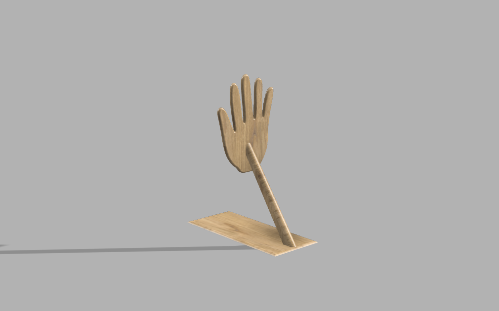
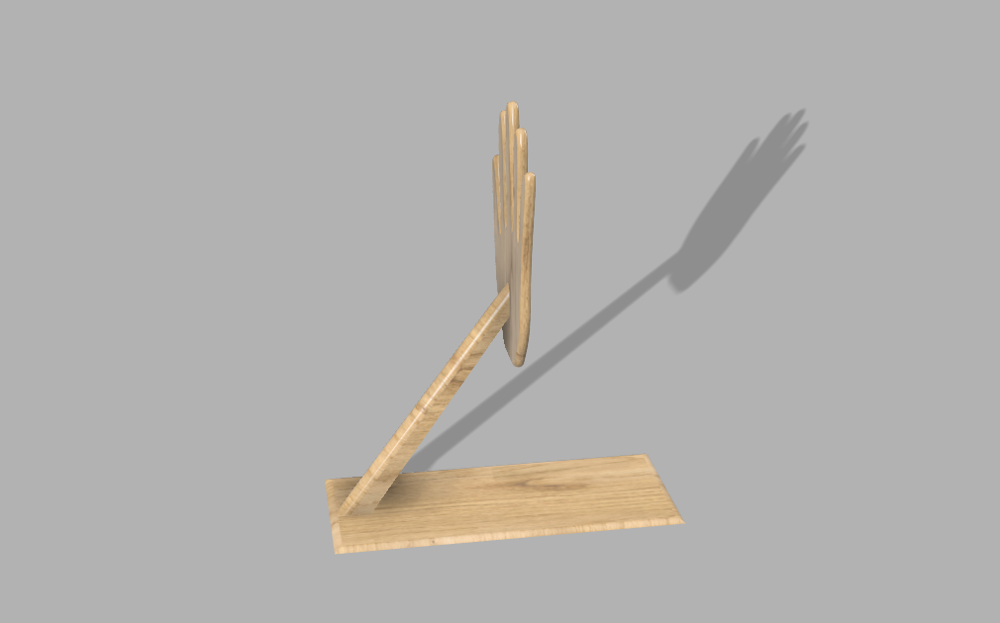

第5回の課題
Design for Others-2
前回の宿題リンク
Design for Others-１
最終的に自分が作った作品


実際に使っている写真は３Dプリントできるところがないので、レンダリングの段階までしました。
説明
この作品は手が本を支えているような形をしたブックエンドです。壁に本をそのまま立てておくと倒れる場合があるので、本を支えるブックエンドを作りました。
使用機材
３Dプリンティング
同じ班のメンバーのDesign for Others-2のページへのリンク
同じメンバーのリンク